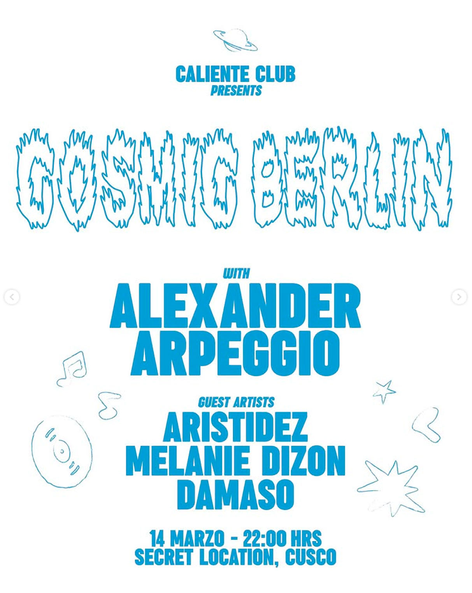

COSMIC BERLIN
fecha: 14/03/26 hora: 10pm
lugar: Secret Location,
Cusco


🪐🍸Caliente Club tiene el honor de presentar a una de las joyas de la escena underground de Berlín: Alexander Arpeggio (@alexander_arpeggio )
BIO:
Alexander es un selector refinado de atmósferas hipnóticas y narrativas profundas. Su sonido transita entre lo físico y lo contemplativo, diseñando viajes que dialogan con la pista y el espacio. Su gran trayectoria lo ha llevado a tocar en escenarios icónicos de Alemania como: Berghain, Panorama Bar y el prestigioso KitKatClub.
🌎ENG:🌎
Alexander is a refined selector of hypnotic atmospheres and deep narratives. His sound moves between the physical and the contemplative, crafting journeys that converse with both the dancefloor and the space itself. His distinguished trajectory has led him to perform at Germany’s most iconic venues, including Berghain, Panorama Bar, and the prestigious KitKatClub.
*La noche de exquisita curaduría musical será este sábado 14 de marzo en el Centro Histórico de Cusco. Pronto locación y Line Up completo*
🧨Caliente Club, 2026🧨
#InUndergroundWeTrust
LINE-UP:
Alexander Arpeggio
Aristidez
Melanie Dizon
Dámaso
Arte x
guicaguicaguica